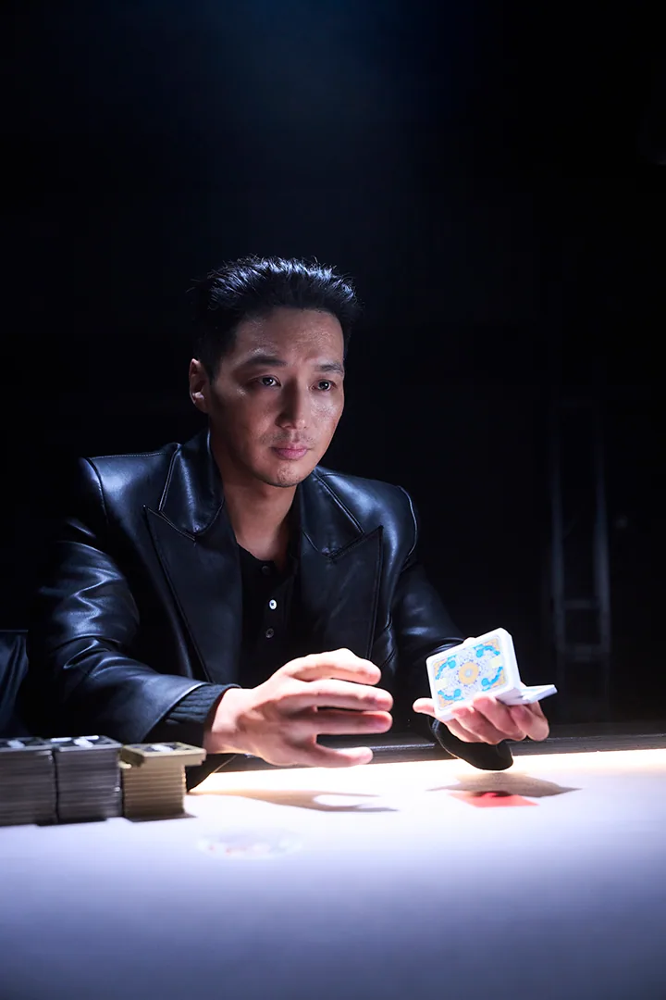
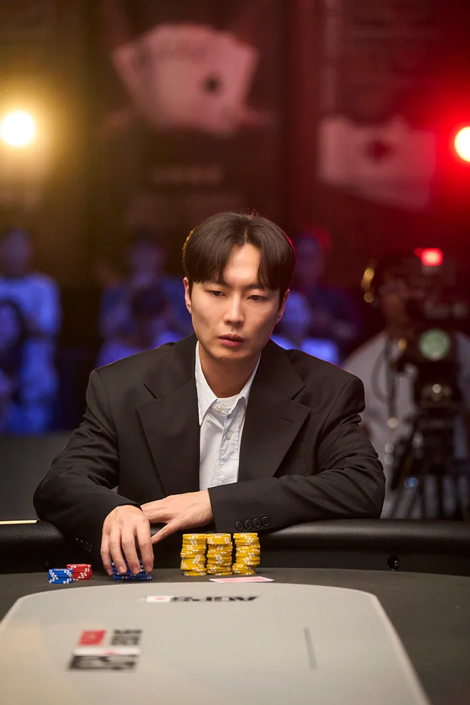
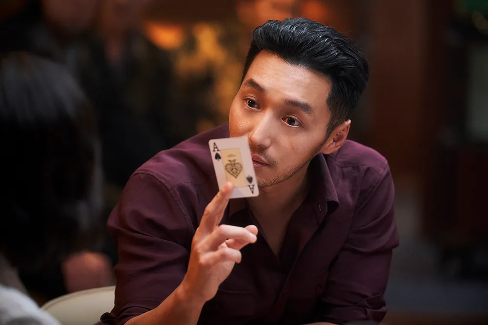
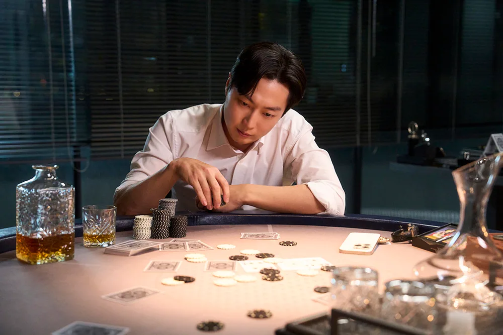
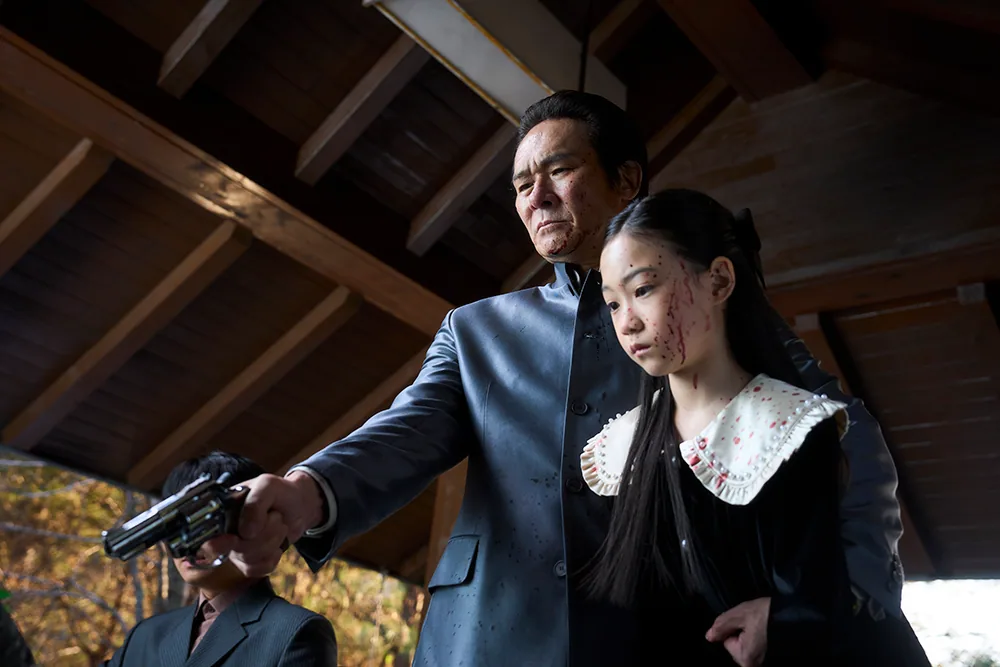
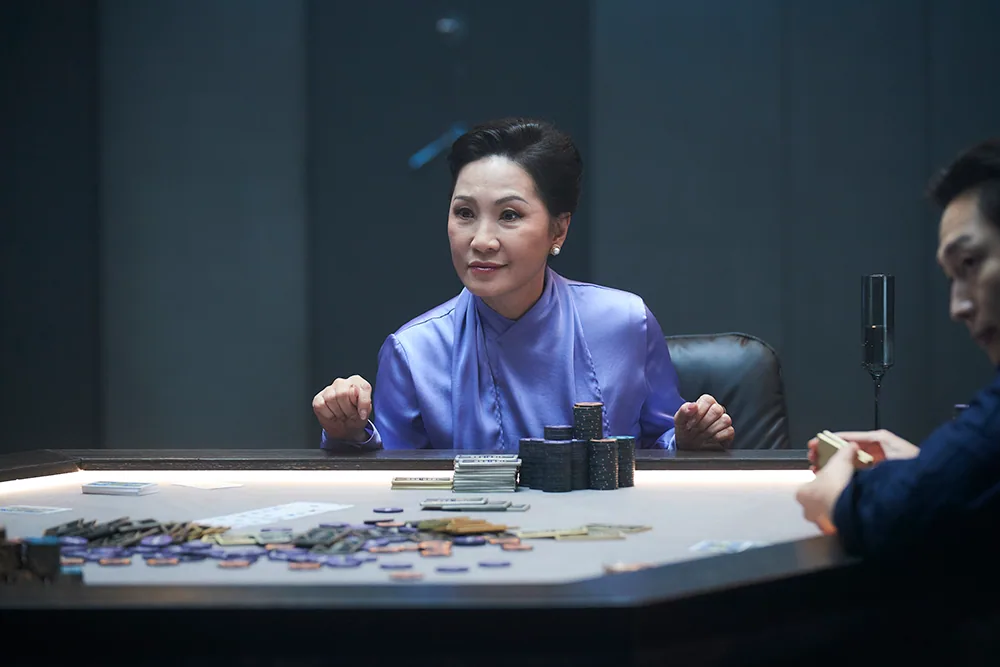
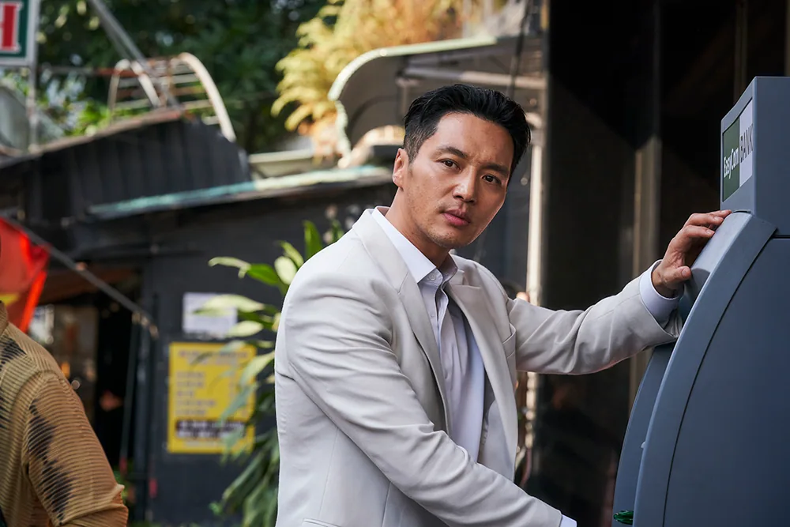
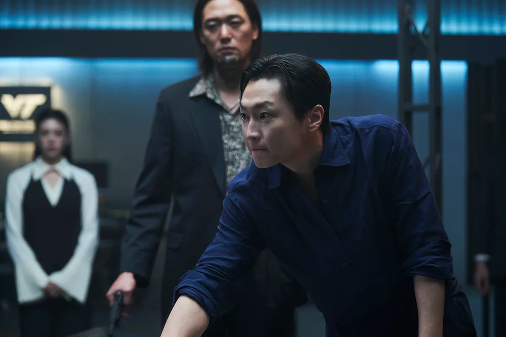

“쫄리면 뒤지시든지.”
<타짜> 1편(2006)의 주인공 고니(조승우)가 남긴 이 말은 어쩐지 올 추석 극장가에서 승부를 거는 한국영화들의 각오인 것 같기도 하다. 추석 연휴 전후로 <인턴> <가능한 사랑> <타짜: 벨제붑의 노래> <암살자(들)> <부활남: 더 레드>가 관객의 눈을 사로잡기 위해 총력을 다하고 있다. 그중 9월 23일 개봉하는 <타짜: 벨제붑의 노래>(이하 <벨제붑의 노래>)는 지난 20년간 <타짜> 시리즈가 그랬듯이 올타임 ‘추석 영화’로서 관객을 새로운 게임에 초대한다. 더 커지고 더 잔인해진 글로벌 도박판에서 목숨 걸고 포커를 치는 두 친구의 대결을 통해 발견할 수 있는 것은 무엇일까. 화투가 포커가 되기까지, <타짜> 시리즈의 변화는 어떤 의미로 읽힐까. 이 시대의 ‘돈의 맛’은 20년 전과 같을까? 박동수, 박예지 두 영화평론가가 <벨제붑의 노래>가 보여준 다양한 면면을 살폈다.
Q <벨제붑의 노래>는 <타짜> 시리즈의 대미를 장식하는 4편으로 알려졌다. 실제 영화는 그런 인상을 남기나?
박동수 영화평론가(이하 박동수 평론가) <벨제붑의 노래>는 독립된 별개의 영화로 보인다. <타짜> 1편은 기술이 거의 안 들어간 아날로그의 느낌이었다고 할까. <벨제붑의 노래>는 도입부부터 메타버스, 온라인 카지노, 아바타, 암호화폐 같은 요소를 깔고 가니 이전 편들과 괴리감이 컸다.
박예지 영화평론가(이하 박예지 평론가) 2편 <타짜-신의 손>(이하 <신의 손>, 2014)의 주인공은 고니의 조카 대길(최승현), 3편 <타짜: 원 아이드 잭>(이하 <원 아이드 잭>, 2019)의 주인공은 짝귀의 아들 일출(박정민)로 1편과 연관성이 있었다. 4편 <벨제붑의 노래>의 인물들은 이전 편과 관련이 없어서 외전 느낌이다. 두 친구 간의 복수극이어서 시리즈를 잇는 느낌이 더더욱 크지 않았다.
Q 앞서 언급했듯이 <타짜> 시리즈를 관통하는 도박의 소재가 1, 2편은 화투였고, 3편에서부터 포커로 바뀌었다. 4편 <벨제붑의 노래>도 포커를 다루면서 온라인 카지노, 글로벌 포커 대회까지 등장한다. 도박 소재와 스케일의 변화가 화투의 ‘손맛’을 대체할 영화적 쾌감을 만들어냈을까?
박예지 평론가 1편이 화투의 ‘손맛’을 너무 잘 살렸다.(웃음) 1편에서는 도박꾼들 옆에 잔뜩 쌓여 있던 돈다발이 왔다 갔다 하는 게 피지컬하게 다가온다. 돈의 물질성과 더불어 약간의 섹슈얼함까지 보여줬다. 아귀(김윤석)가 도박하다가 ‘구라’를 친 사람의 손목을 자르는 것도 매우 물질적이다. 엄청난 돈다발이 눈앞에 오가고 손목이 잘리는 게 관객의 심장을 벌떡거리게 했다. 이후 화투에서 포커로 바뀌고, 현금이 칩으로 대체된다. <벨제붑의 노래>에서는 온라인 카지노까지 나오면서 돈이 점점 추상화된다. 폭력의 물질성과 에로티시즘이 퇴색됐다고 할까.
박동수 평론가 현금 다발을 놓고 화투를 치는 것과 칩을 놓고 포커를 치는 것은 확실히 다르다. 칩을 놓고 도박을 하면 액수를 인물들이 계속 말해야 한다. 글로벌 포커는 돈의 단위도 원화가 아니라 달러이니 액수가 직감적으로 와닿지 않는다. 암호화폐를 거래하는 것도 계속 나오지 않나. 돈이 스마트폰 안에 있고, 컴퓨터 속에 있으니 돈을 대하는 감각 자체도 1편과 너무 달라졌다.
화투패를 섞을 때 쫙쫙 달라붙는 소리, 내려놓는 소리, 뒤집을 때의 소리 등이 있는데, 포커의 카드로는 표현하기 어렵다. 화투는 화려한 손기술을 보여줄 수 있는 반면 포커는 <나우 유 씨 미 : 마술사기단>(2013)이나 <21>(2008)에서처럼 마술 도구로 사용하거나 눈치 게임을 하는 식이다. <벨제붑의 노래>에서도 카드로 표현하는 게 크게 없다. 장태영(변요한)에게 스승 곽동욱(조우진)이 가르치는 ‘스테키(편집자 주 – 카드를 섞을 때 특정 위치에 원하는 패를 미리 놓거나 조작하는 기술을 가리키는 은어)’가 있지만, 화면으로 멋지게 보여주기는 어려웠던 것 같다. 1편에 나오는 ‘밑장 빼기’는 소리가 무척 감각적인데, ‘스테키’는 ‘섞었는데 이렇게 됐네’ 하는 식이다.


Q <벨제붑의 노래>의 원작 만화는 원작자 허영만 작가가 ‘드라마가 가장 강한 부분’이라고 말하기도 했다. 같은 이름을 가진 장태영-박태영(노재원) 두 인물을 대립시키고 ‘루시퍼 vs. 벨제붑’이라는 신화적 프레임을 엮어 도박판에 적용했다. 그런 드라마성이 잘 표현되었을까?
박예지 평론가 원작이 촘촘하게 그린 고등학교 시절을 영화도 다행히 중요하게 가져가려고 노력한 것처럼 보였다. 오프닝 장면부터 벨제붑의 상징인 파리의 시점으로 바다에 떠 있는 배 안으로 들어가고, 상상 장면에서 장태영이 파리로 변하는 효과까지 적극적으로 보여준다. 아쉬웠던 것은 장태영과 박태영의 관계다. 원작에서 두 사람은 서로 좋아하고 질투하고 닮아가려 한다. 서로의 위치가 계속 바뀌면서 관계성이 정말 드라마틱하다. 영화는 운 좋은 사람 장태영과 운 나쁜 사람 박태영의 대결로만 가져가서 관계성이 납작해졌다. 서사적으로도 많은 것을 건너뛰긴 했다. 원작의 박태영은 장태영의 누나 장태희(임세미)를 짝사랑하다가 결국 사귄다. 이후 관계가 복잡해지고 누나를 우발적으로 죽인 박태영이 그 사실을 숨기려고 장태영의 살인을 사주하기 때문에 이해가 된다. 영화에서는 박태영이 장태영을 갑자기 베트남으로 보내 죽이려고 하니 그 캐릭터가 이상해 보인다.
박동수 평론가 가장 좋은 부분이 두 주인공의 고등학생 시절이다. 도입부에 장태영의 내레이션으로 이야기를 보여주고, 그다음 박태영의 내레이션으로 같은 시기를 다시 보여주는 것이 납득이 가고 재미있었다. 장태영과 박태영을 연기한 변요한과 노재원 배우 모두 교복을 입고 등장해도 어색하지 않았다. 그런데 성인이 된 이후의 구도는 너무 장태영만 응원하게 된다. 어느 정도 박태영 편도 들어줘야 긴장감이 생길 텐데, 영화가 너무 장태영 편이었다.(웃음)


Q <타짜> 시리즈의 매력 중 하나가 캐릭터들의 ‘구조’다. 주인공–스승–빌런–설계자(여성)로 짜여지는. 4편은 그 구조가 어떻게 작용했을까?
박동수 평론가 1편의 구조로 많이 되돌아간 것 같다. 일본 배우 미요시 아야카가 연기한 가네코가 일종의 설계자다. 1편은 정마담(김혜수)의 내레이션으로 시작하고 정마담의 내레이션으로 끝난다. 영화 전체가 사실 그 설계 안에 들어있다. <벨제붑의 노래>에서 가네코는 장태영이 죽을 위기를 당하고 스승을 만난 후 등장한다. 설계자치고는 늦은 등장이고, 사실상 조력자다.
박예지 평론가 1편을 인생 영화로 꼽는 남성 관객이 정말 많지 않나. 입문하고 수련하고 고수가 되어 최종 빌런과 결투하기까지 영웅 서사를 완벽하게 구현해 몰입할 수밖에 없는 구조였다. 캐릭터마다 개성도 확실했다. 2, 3편에서 그 구조가 점점 약해졌고, 3편은 심지어 하이스트 무비(범죄영화의 하위 장르 가운데 하나. 무언가를 강탈 또는 절도하는 모습과 범죄 과정을 자세히 보여주는 영화)로 여러 오리지널 캐릭터를 투입하다 보니 설계가 가장 잘못된 형태가 됐다. <벨제붑의 노래>는 다시 1편의 구조를 승계했지만, 장태영과 가네코가 중간에 만나서 협업하는 느낌이 크다.
Q 가네코 역 미요시 아야카를 필두로 사사키 회장 역 이하라 츠요시, 타오 회장 역 홍 다오 등 다국적 캐스팅은 영화에 기여했을까?
박동수 평론가 분위기를 만드는 데 어느 정도 역할을 했다. 다만 영화 중반 이후에나 등장해 이야기가 확장되기보다는 두 개의 시나리오를 붙여 놓은 것처럼 보였다. 등장 타이밍도 애매했다. 박태영이 처음 장태영을 베트남에 보냈을 때 야쿠자 커넥션 정보를 슬쩍 뿌려줬으면 중반 이후 가네코와 사사키 그룹의 등장이 훨씬 빨리 납득됐을 것이다. 야쿠자가 포커를 한다는 것도 애매하다. 야쿠자라면 바둑을 둘 것 같지 않나. 홍 다오 배우가 연기한 베트남 타오 회장님은 마작을 하시면 어울릴 것 같은 바이브다.(웃음) <범죄도시> 시리즈(2017~)에 야쿠자가 등장했을 때 기대하는 효과가 있는데, <타짜> 시리즈에 야쿠자가 나왔을 때 기대하는 효과는 대체 무엇일까 생각해보게 된다.
박예지 평론가 글로벌 배경에 다국적 캐스팅은 적절했지만 <타짜> 시리즈로서 매력을 끌어올렸는지는 의문이다.


Q 변요한과 노재원 두 배우의 연기는 전작들의 주인공(조승우, 최승현, 박정민)과 빌런들(김윤석, 곽도원, 윤제문)이 보여준 것과는 다른, 자기만의 매력을 지니고 있을까?
박동수 평론가 두 배우 모두 자기 역할을 잘했다. 동년배 한국 남자 배우들 가운데 연기 폭이 넓은 분들이다. 그런데 이들이 올라탄 각본이 좋지 않았다. 특히 박태영의 서사가 너무 스킵되거나 순서가 바뀌어서 어색하고, 그 때문에 사이코패스 같은 느낌을 줘서 아쉬웠다. 배우들이 놀 수 있는 판이 제대로 깔리지 않았다.
박예지 평론가 배우들의 연기에 비해 캐릭터 서사가 아쉽다. 자꾸 1편과 비교하게 돼서 미안한데,(웃음) 조승우의 고니는 처음엔 엄청 순수하고 어리바리하다가 도박판의 세계로 들어갈수록 이미지가 바뀐다. 변요한의 장태영은 처음부터 그냥 잘생기고 몸 좋고 운 좋은 친구라서 굴곡이 크게 없다. 원작의 박태영은 발 페티시가 있다. 처음 장태영 누나의 발에 반해서 누나에게 집착하다가 결국 그녀와 사귀는데, 어느 날 장태영의 새 여자친구의 맨발에 꽂혀서 그 여자를 탐한다. 페티시는 욕망을 보여주는 메타포다. 박태영이 진짜 원하는 건 그 여자들이 아니라 장태영이 소유하고 있다고 여겨지는 것들이다. 결국 장태영을 없애고 그가 가진 모든 것을 갖겠다는 변태적이면서도 음침한 박태영의 욕망이 잘 강조된다. 영화는 그게 약했다. 더 깊게 표현할 수 있었을 텐데. 멀끔하게 생겼는데 음침한 느낌을 주는 연기는 노재원 배우가 정말 잘 하지 않나.(웃음)


Q <타짜> 시리즈의 다양한 조연들은 주연만큼 강렬한 인상을 남겨왔다. <벨제붑의 노래>에서 가장 눈에 띄는 조연 캐릭터를 꼽는다면?
박동수 평론가 조우진 배우가 연기한 곽동욱이다. 스크린에 나와 있는 순간에는 꼭 시선을 가져간다. 이전 출연작들과 크게 다르지 않은 톤이지만 곽동욱이 등장할 때마다 영화에 생기가 돈다. 살인청부업자 조중환(윤경호)의 부하로 나오는 래퍼 스윙스(문지훈)도 인상적이다. 이름이 아브라함인데 모시는 두목은 북한 출신이라니 뭔가 웃긴다.(웃음) 활동 배경은 베트남인데 아브라함이 사용하는 영어는 미국식 슬랭이다. 이렇게 이상한 조합이 스윙스라는 사람의 몸을 통해서 만들어지니까 말도 안 될 것 같은 캐릭터가 말이 된다. 괜찮은 조연 배우 한 명이 등장했다고 할까.
박예지 평론가 조우진의 곽동욱과 스윙스의 아브라함도 좋았지만 역시 미요시 아야카의 가네코가 가장 인상적이었다. 너무 예뻐서 충격받았다.(웃음) 화려하고 아름다운 가네코의 이미지가 도박판의 이미지와 어울린다. 가네코는 사사키 그룹의 본부장으로서 권력도 갖고 있다. 항상 포커페이스를 유지하는 ‘냉미녀’인 것도 중요하다. 에로티시즘과 타짜에게 필요한 냉혹함을 종합적으로 보여준다. 가네코가 좋았던 이유가 또 있다. 이전 편들의 여성 캐릭터들은 성적으로나 감정적으로 주인공과 엮인다. 1편의 정마담은 고니를 보고 ‘저 남자를 갖고 싶다’고 생각한다. 2편의 대길은 허미나(신세경)에게 처음부터 반한다. 그에 비해 가네코와 장태영은 ‘우리 한 편이지?’ 느낌으로 한 번 섹스를 하고, ‘그래 우리 협업하는 거야’ 하는 느낌으로 각자의 복수를 하는 게 좋았다.(웃음)
Q 연출을 맡은 최국희 감독은 1, 2, 3편의 감독 최동훈, 강형철, 권오광과 비교될 수밖에 없을 듯하다. 자기만의 개성을 드러낸 지점이 있을까?
박동수 평론가 1편 최동훈 감독의 개성이 너무 강력했다. 강형철 감독과 권오광 감독도 개성이 약한 연출자들이 아니다. 그런데 2편 <신의 손>과 3편 <원 아이드 잭>은 1편이 만들어 놓은 범주 안에서 움직이면서도 약간 비틀거린다는 인상이다. 최국희 감독이 그래서 더 적임자일 수 있었다. 정해진 틀 안에서도 할 수 있는 것을 해내려고 하는 스타일이다. 전작 <국가부도의 날>(2018)과 그래서 잘 맞았는데, <벨제붑의 노래>는 최국희 감독이 들어와 해낼 수 있는 것이 많지 않았던 것 같다.
흔히 공정 서사로 얘기되는 부분도 많이 개입됐다고 생각한다. 그게 감독의 선택인지 명확하지 않지만. 운이 좋아서 성공한 친구와 열심히 노력했는데도 안 되는 친구의 대립이, 과거의 구도가 재연될 수 없는 사회가 되어버렸다는 것을 느끼게 했다. 시나리오의 말맛은 확실히 아쉽다. 변요한과 노재원도 말맛이 잘 사는 배우들은 아니다. 그들의 전작들을 떠올려 봤을 때도 대사로 기억되는 장면이 바로 떠오르지 않으니까. 그 지점이 확실히 차이가 있다.
박예지 평론가 <벨제붑의 노래> 오프닝을 보고 조금 놀랐다. 바다에 떠 있는 배를 부감 샷으로 보여주고 파리의 시점으로 배 안으로 들어가는데 장태영이 묶인 채 바지와 바닥에 똥을 지리고 있다. 추석 영화인데 시작하자마자 똥을 보여주다니, 강렬했다.(웃음) 1편이 화투판의 에로티시즘과 육체적 물리성을 강조했다면 4편은 더럽혀지고 무너진 육체성을 내세우면서 이 작품의 무의식을 드러낸다. 1편의 시대가 ‘한 판 잘 따서 부자 될 거야’라는 욕망이 강했다면 4편에서는 운 좋은 자와 운 나쁜 자의 이분법, 못 가지고 태어난 자는 결국 가진 자가 될 수 없다는 패배주의, 계급 상승의 길이 막혀 있는 사회의 가장 낮은 자리에 떨어진 비참함을 처음부터 강하게 보여준다.
살인청부업자가 500원짜리 동전을 던져 장태영을 풀어줄지 말지 정하지 않나. 그 동전을 던지는 손맛도 기억에 남는다. 1편의 도박판은 진짜 타짜들의 싸움이다. 타짜로서 실력이 있어야 이긴다. 그런데 500원짜리 동전을 던진다는 건 운에 맡기는 거다. 과거에는 능력을 기르면 인생 역전의 기회가 있었지만, 이제는 운이 없으면 내 위치를 벗어날 수 없다는 의미로 읽혀서 인상적이었다.
Q <타짜> 1편은 오랜 시간 많은 밈을 양산하기도 했을 만큼 인상적인 장면들로 다양하게 기억된다. <벨제붑의 노래>에도 그럴 가능성이 높아 보이는 장면이 있을까?
박예지 평론가 <타짜>가 처음부터 밈이 많지는 않았다. 1편 곽철용(김응수)의 대사 “묻고 더블로 가”도 처음부터 유명하지 않았고 시간이 흐르면서 재평가됐다. 1편은 이제 2시간 내내 싱어롱이 가능하다. “고니를 아냐구요?”라는 정마담의 내레이션부터.(웃음) 돌이켜 생각해 보면 1편 캐릭터들의 욕망과 설정이 강렬했다. 정마담의 “나 이대 나온 여자야”는 전설적인 대사가 됐는데, 굉장한 과시욕이 있고 돈을 엄청 밝힌다는 게 뚜렷하게 보인다. 아귀도 “내가 빙다리 핫바지로 보이냐”면서 고니의 손목을 자르려고 하는데, 그 말 한마디로 성격이 다 보인다. <벨제붑의 노래>는 과거사가 구구절절 나오지만 캐릭터의 욕망이 확실하게 잡히지 않는다. 아이코닉한 대사나 밈이 나오기는 어려워 보였다.
박동수 평론가 곽철용의 “묻고 더블로 가”가 밈으로 재발견된 건 코인 시장이 흥하면서다.(웃음) 1편 캐릭터들은 뚜렷한 욕망이 있어서 특정 타이밍이 왔을 때 끄집어낼 수 있었다. 4편에서는 그런 욕망이 안 보인다. 고교 시절 장태영과 박태영의 친구인 하마(김민호)가 1편 대사를 다시 내뱉는 장면이 <벨제붑의 노래>가 밈이 될 수 있는 최대치 아닐까. 1편이 전설이 되어버린 것을 받아들일 수밖에 없다는 걸 제작진도 알았던 것 같다.(웃음) 그래도 밈이 양산될 가능성 있는 장면이라면 스윙스 장면 정도다.
Q 동명의 원작 만화를 IP로 발전시킨 <타짜> 시리즈의 20년, 이 프랜차이즈가 지나온 길을 어떻게 볼 수 있을까? 순기능과 역기능이 있을까?
박동수 평론가 <범죄도시> 시리즈는 특이한 사례이고, 시리즈가 지속된다는 것 자체가 21세기 한국영화에서 매우 드문 일이다. 20년 동안 4개의 영화로 이어져 왔다는 것은 흥미롭지만 제작사가 1편의 흥행을 놔주지 못하고 억지로 붙잡고 있었던 결과라는 인상도 받는다. 2, 3, 4편이 10년 안에 나왔다면, 영화의 완성도가 부족해도 밀어붙이는 힘이 있다고 인식했을 텐데. <범죄도시> 2, 3, 4편이 연속해서 1천만 관객을 넘은 것은 매해 개봉해서 가능했다고 본다. 허영만 작가가 만든 한국만화 IP를 시리즈로 만들어왔다는 것은 분명 의미 있지만, 제작사가 더 신속하게 움직였다면 좋았을 것이다.
박예지 평론가 시리즈로서 응집력은 덜했지만 20년간 대한민국에서 돈이 어떤 대상으로 변해왔는지 그 과정이 보여서 재미있었다. 1편은 욕망과 쾌락이 얽히고 타짜들이 한탕 하는 시대를 보여줬다. 그다음부터 인물들이 빚을 지기 시작하고 돈이 엄청난 무게의 부채감으로 다가온다. 혼자만의 실력으로 빚을 갚을 수 없게 되니 3편에서는 최종 빌런을 사업가로 설정하고 이 자본가를 함께 무너뜨리자는 느낌으로 전개돼서 흥미로웠다. 4편 <벨제붑의 노래>는 운 좋은 놈은 자본으로 성공하고 운 나쁜 놈은 결국 똥밭에서 죽게 될 거라는, 잔인하고 냄새 나는 이야기다. 즉, 돈이 더 이상 쾌락을 주지 못하고 매력적으로 보이지 않는다. 고통과 박탈감, 억울함 그리고 비참함을 느끼게 한다. 그러니, 이제는 이 시리즈를 더 만들려고 해도 만들기 어렵지 않을까 생각한다.
<타짜: 벨제붑의 노래> 메인 예고편
Q 결국 <벨제붑의 노래>는 YES인가 NO인가.
박동수 평론가
NO.
그래도 2, 3편보다는 극장에서 2시간을 보내기에 괜찮다. 2편이 너무 길었다.
박예지 평론가
NO.
킬링타임용으로 보기에는 2편이나 3편보다 나았다고 생각한다. 전편들과 비교하지 않고, 독립된 하나의 영화로 생각한다면 보기 좋은 영화다.